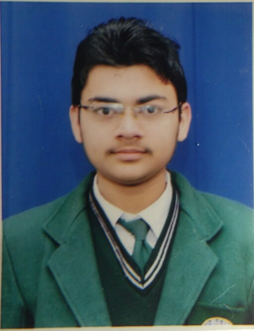

Lakshay Goel
lg263@snu.edu.in
8979638036
| Name of Institution | Name of Course/Board | Year of Passing | Percentage/CGPA |
|---|---|---|---|
| Shiv Nadar University | B. Tech- Computer Science Engineering | 2018 | 7.86 |
| Delhi Public School, Bulandshahr | Higher Secondary School (Central Board of Secondary Education) | 2014 | 94.6 |
| New Lancers Senior Secondary School, Sikandrabad | Senior Secondary School (Central Board of Secondary Education) | 2012 | 10 |
The project involved a reporting tool that uses TestNG API and makes its own customised report showing the results about all the tests written for any program or a project. Technology used: JAVA, HTML, CSS and JSON was used as an intermediate language.
Shiv Nadar University Election SystemThe project involved a secure offline execution of SNU election system having an administrator that has full control over it. Technology used: Concepts of Data Structures in C- Linked lists and Hash Tables.
Desktop Cricket AppletThe project involved a cricket applet that shows all the information about a T-20 Cricket World Cup 2016 and the results of every match is updated by the administrator through the GUI by logging in, as the tournament proceeds. Technology used: JAVA and MYSQL.
Part of an Internship and mentorship program which involved understanding of testing automation, studying about testNG API and using it for making our own tool which makes it own customised reports using JAVA, HTML, CSS.
• 3rd Prize in 3rd State Level UCMAS Abacus and Mental Arithmetic Competition organized by Abacus Learning Pvt. Ltd., Lucknow U.P.
• Completed certified course on Introduction of Modern Application Development from IIT Madras(NPTEL).
• Completed course on Abacus by UCMAS.
• C, JAVA, HTML/CSS, Python, MySql.
• Captain of School Cricket Team organized at School Level.
• Playing cricket
• Listening Music and Singing
House No. 921, Kayasthwara, Bazar Madhodas, Sikandrabad, Dist. Bulandshahr.